动力建模注意事项
为动力分析准备 FLAC3D 模型时，用户应考虑三个方面： 1) 动力荷载与边界条件； 2) 波在模型中的传播；以及 3) 力学阻尼。 本节就为动力分析准备 FLAC3D 数据文件时如何处理各个方面提供指导。求解动力问题（Solving Dynamic Problems）和验证问题（Verification Problems）说明了此处讨论的大多数功能的使用方法。
动力荷载与边界条件
FLAC3D 通过在模型边界或内部网格点处施加动力输入边界条件，来模拟承受外部和/或内部动力荷载的材料区域。通过指定安静（黏性）边界或自由场边界条件，可以减少模型边界处的波反射。动力荷载与边界条件的类型示意于 图 1（Figure 1）；各条件将在后续各节中讨论。
动力输入的施加
在 FLAC3D 中，动力输入可按以下方式之一施加：
- 加速度时程；
- 速度时程；
- 应力（或压力）历史；或
- 力历史。
动力输入通常使用 施加网格单元面条件（zone face apply） 命令施加到模型边界上。也可使用 zone gridpoint fix 命令将加速度、速度和力施加到内部网格点。请注意，若唯一的动力源位于模型内部，则不需要 图 1（Figure 1） 所示的自由场边界（见 自由场边界（Free-Field Boundaries））。
输入的历史函数被视为对 施加网格单元面条件（zone face apply） 命令所指定值的乘数。历史乘数通过 history 关键字指定，可以是以下两种形式之一：
- 由 表格插值取值（
table） 命令定义的表；或- 一个 FISH 函数。
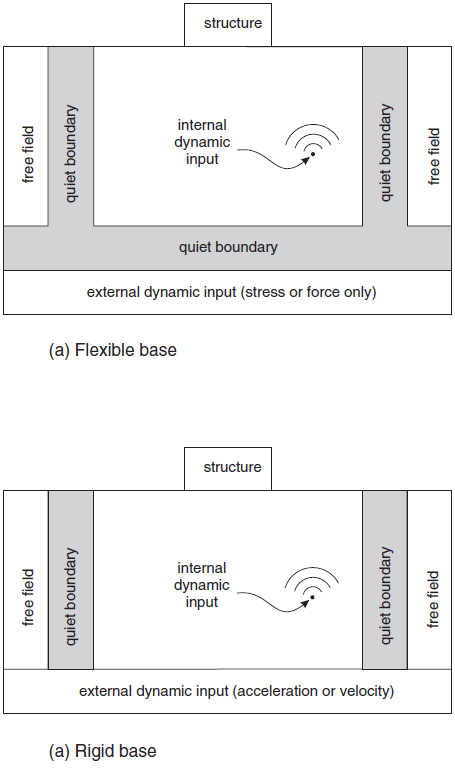
图 1：FLAC3D 中可用的动力荷载与边界条件类型。
采用 表格插值取值（table） 输入时，乘数值与相应的时间值以单个数值对的形式录入指定的表；每对中的第一个数被假定为动力时间值。相邻表项之间的时间间隔不必对所有表项都相同。导入表格数据（table import） 命令可将包含时间历史（例如地震记录）的文件导入指定的 FLAC3D 表。若使用 FISH 函数提供乘数，则该函数必须在函数内部使用 FLAC3D 标量变量 单元动力学总时间（zone.dynamic.time.total） 访问动力时间，并计算与该时间对应的乘数值。竖杆中剪切波的传播（Shear Wave
Propagation in a Vertical Bar）示例给出了由 FISH 函数导出动力荷载的例子。
动力输入可沿 \(x\) 向、\(y\) 向或 \(z\) 向施加，分别对应于模型的 \(x\)、\(y\)、\(z\) 轴；也可沿模型边界的法向和切向施加。
将速度或加速度输入施加到模型边界时的一个限制是：这些边界条件不能与安静（黏性）边界条件施加在同一边界上（比较 图 1（Figure 1）-a 与 图 1（Figure 1）-b），否则 安静边界（quiet boundary）的效果将被抵消。要在安静边界处输入地震动，需采用应力边界条件（即将速度记录转换为应力记录并施加到安静边界）。速度波可按以下公式转换为施加的应力：
或
| 其中： | \(\sigma_n\) | = | 施加的法向应力； |
| \(\sigma_s\) | = | 施加的剪应力； | |
| \(\rho\) | = | 质量密度； | |
| \(C_p\) | = | 介质中 \(p\) 波的传播速度； | |
| \(C_s\) | = | 介质中 \(s\) 波的传播速度； | |
| \(v_n\) | = | 输入的法向质点速度；以及 | |
| \(v_s\) | = | 输入的剪切质点速度。 |
\(C_p\) 由下式给出
而 \(C_s\) 由下式给出
这些公式假定为平面波条件。方程(1)和(2)中的因子二反映了这样一个事实：施加的应力必须是无限介质中所观测到的应力的两倍，因为一半的输入能量被黏性边界吸收。该公式与 Joyner 和 Chen（1975）的公式类似。
以下示例演示在安静边界处输入波：
基线校正
若将现场“原始”加速度记录或速度记录用作时间历史，则 FLAC3D 模型在运动结束后可能出现持续速度或残余位移。这是因为完整时间历史的积分可能不为零。例如，图 2（Figure 2）a 中的理想化速度波形在积分后可能产生 图 2（Figure 2）b 中的位移波形。应执行“基线校正”过程，不过若不进行该过程，FLAC3D 模拟的物理过程通常不会受到影响。可以确定一个低频波（例如 图 2（Figure 2）c），将其叠加到原始历史后可使最终位移为零（图 2（Figure 2）d）。图 2（Figure 2）c 中的低频波可以是多项式或周期函数，其自由参数经调整以获得所需结果。此类基线校正函数的示例在动力条件与模拟（Dynamic Conditions and Simulation）中作为 FISH 函数给出。
基线校正通常只适用于复杂波形，例如由现场量测得到的波形。使用简单的合成波形时，很容易在生成合成波形的过程中确保最终位移为零。通常在地震分析中，输入波为加速度记录。可采用基线校正程序强制最终速度和位移均为零。标准基线校正程序可参阅地震工程方面的教科书。
对输入记录进行基线校正的另一种替代方法是：若整个模型存在残余位移，则在计算结束时施加一次位移平移。这可以通过对网格施加固定速度将残余位移减小到零来实现。该操作不会影响模型变形的力学机理。
用于执行基线校正的计算机程序可从若干网站获取（例如 USGS 强震计划数据处理页面（http://nsmp.wr.usgs.gov/processing.html））。
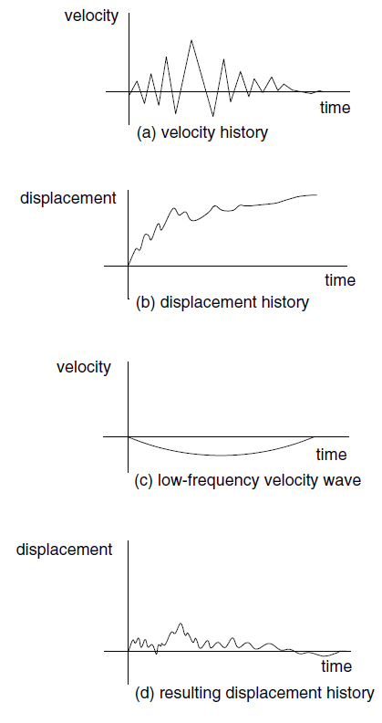
图 2：基线校正过程。
安静边界
岩土力学问题的建模涉及的介质，在分析尺度上更适合表示为无界介质。深部地下开挖通常假定为被无限介质包围，而地表和近地表结构则假定位于半空间之上。依赖于有限空间区域离散化的数值方法要求在人工数值边界处施加适当条件。在静力分析中，固定边界或弹性边界（例如由边界元技术表示）可以合理地置于距所关注区域一定距离处。然而在动力问题中，此类边界条件会使向外传播的波反射回模型，无法实现必要的能量辐射。采用更大的模型可以减轻该问题，因为材料阻尼会吸收从远处边界反射回来的波中的大部分能量。但这一方案会带来巨大的计算负担。另一种方案是采用安静（或吸收）边界。已提出多种公式。Lysmer 和 Kuhlemeyer（1969）提出的黏性边界被用于 FLAC3D。它基于在模型边界的法向和切向设置独立的阻尼器。该方法对于以大于 30° 的入射角接近边界的体波几乎完全有效。对于更小的入射角或面波，仍有能量吸收，但并不完美。不过该方案的优点是它在时域中运算。其有效性已在有限元和有限差分模型中得到了验证（Kunar 等 1977）。White 等（1977）提出的该技术的一种变体也被广泛使用。
更高效的能量吸收（尤其是对瑞利波而言）需要使用频率相关单元，而这类单元只能用于频域分析（例如 Lysmer 和 Waas 1972）。这些边界通常称为“一致边界”，涉及计算耦合所有边界自由度的动力刚度矩阵。可采用边界元法推导这些矩阵（例如 Wolf 1985）。Roesset 和 Ettouney（1977）记录了不同类型的基本边界、黏性边界和一致边界性能的对比研究。
Lysmer 和 Kuhlemeyer（1969）提出的安静边界方案是在边界的法向和切向独立设置阻尼器。这些阻尼器提供黏性法向和切向面力，由下式给出：
其中 \(v_n\) 和 \(v_s\) 是边界处速度的法向分量和切向分量，\(\rho\) 是质量密度，\(C_p\) 和 \(C_s\) 分别是 \(p\) 波和 \(s\) 波波速。
这些黏性项可以直接引入位于边界上的网格点的运动方程。然而 FLAC3D 中采用了另一种方法，即按施加边界荷载的同样方式，在每个时步计算并施加面力 \(t_n\) 和 \(t_s\)。这比前一种方法更方便，且测试表明该实现同样有效。唯一潜在的问题涉及数值稳定性，因为黏性力是由滞后半个时步的速度计算得到的。在迄今的实际分析中，使用无反射边界并未要求减小计算时步。小尺寸网格单元对时步的限制通常更为重要。
动力分析从某种地应力（原位）条件开始。若在生成静力应力状态时使用了固定边界，则可将该边界条件替换为安静边界；边界网格点将被释放，边界反力将被自动计算并在整个动力加载阶段保持。但应避免在动力阶段改变静力荷载。例如，若在底边界指定安静边界之后再开挖隧道，整个模型将开始向上运动。这是因为总重力不再与边界改为安静边界时计算得到的底部总反力相平衡。若静力求解期间使用了应力边界条件，则在动力阶段施加安静边界时，必须在同一边界上施加符号相反的应力边界条件。这样可使边界处的反力在动力计算中保持正确。
安静边界条件可沿全局坐标方向施加，也可使用带相应关键字的 施加网格单元面条件（zone face apply） 命令沿倾斜边界的法向和切向施加（一个分量为 quiet-normal、quiet-dip、quiet-strike，三个分量则为 quiet）。使用 施加网格单元面条件（zone face apply） 命令设置安静边界条件时，请记住方程(5)和(6)所用的材料性质取自紧邻边界的网格单元。因此，在给出 施加网格单元面条件（zone face apply） 命令时，边界网格单元必须已具有适当的材料性质，以便存储正确的安静边界性质。
当动力源位于网格内部时，安静边界最为适用。当动力源作为边界条件施加在顶部或底部时，不应在网格的侧边界使用安静边界，因为波能量会从侧面“泄漏”。在这种情况下，应对侧面施加自由场边界（见下文）。
自由场边界
对坝等地表结构的地震响应进行数值分析，需要对与基础相邻的材料区域进行离散化。地震输入通常表示为向上穿过下伏材料传播的平面波。模型侧面的边界条件必须考虑在无结构情况下会存在的自由场运动。在某些情况下，简单的基本侧边界可能就足够了。例如，若在水平边界 AC（如 图 3（Figure 3） 所示）上仅施加剪切波，则可以仅沿竖直方向固定 AB 和 CD 边界（见具有自由场边界的模型上的剪切波加载（Shear Wave Loading of a Model with Free-Field Boundaries）中的示例）。这些边界应置于足够远处，以尽量减小波反射并实现自由场条件。对于材料阻尼较高的土体，以相对较小的距离即可获得该条件（Seed 等 1975）。然而当材料阻尼较低时，所需的距离可能导致模型不切实际。另一种替代方法是“强制”自由场运动，使边界保持其无反射特性（即源自结构的向外波被适当地吸收）。该方法曾用于连续体有限体积程序 NESSI（Cundall 等 1980）。FLAC3D 中开发了一种与此类似的技术，即与主网格分析并行执行自由场计算。
主网格的侧向边界通过黏性阻尼器与自由场网格耦合，以模拟安静边界（见 图 3（Figure 3）），并且自由场网格的不平衡力被施加到主网格边界上。这两种条件由方程(7)、(8)和(9)表示，适用于法向沿 \(x\) 轴方向的某一边界平面上的自由场边界。其他侧面和角部边界可写出类似的表达式：
| 其中： | \(\rho\) | = | 沿模型竖直边界的材料密度； |
| \(C_p\) | = | 侧边界处的 \(p\) 波波速； | |
| \(C_s\) | = | 侧边界处的 \(s\) 波波速； | |
| \(A\) | = | 自由场网格点的影响面积； | |
| \(v_x^m\) | = | 侧边界处主网格中网格点的 \(x\) 向速度； | |
| \(v_y^m\) | = | 侧边界处主网格中网格点的 \(y\) 向速度； | |
| \(v_z^m\) | = | 侧边界处主网格中网格点的 \(z\) 向速度； | |
| \(v_x^{\rm ff}\) | = | 侧向自由场中网格点的 \(x\) 向速度； | |
| \(v_y^{\rm ff}\) | = | 侧向自由场中网格点的 \(y\) 向速度； | |
| \(v_z^{\rm ff}\) | = | 侧向自由场中网格点的 \(z\) 向速度； | |
| \(F_x^{\rm ff}\) | = | 自由场网格点力，由该网格点周围自由场网格单元的 \(\sigma_{xx}^{\rm ff}\) 应力贡献； | |
| \(F_y^{\rm ff}\) | = | 自由场网格点力，由该网格点周围自由场网格单元的 \(\sigma_{xy}^{\rm ff}\) 应力贡献；以及 | |
| \(F_z^{\rm ff}\) | = | 自由场网格点力，由该网格点周围自由场网格单元的 \(\sigma_{xz}^{\rm ff}\) 应力贡献。 |
这样，向上传播的平面波在边界处不会发生畸变，因为自由场网格提供了与无限模型相同的条件。若主网格是均匀的且没有地表结构，则侧向阻尼器不起作用，因为自由场网格执行与主网格相同的运动。然而，若主网格的运动与自由场不同（例如由于地表结构辐射次生波），则阻尼器会以类似于安静边界的方式吸收能量。
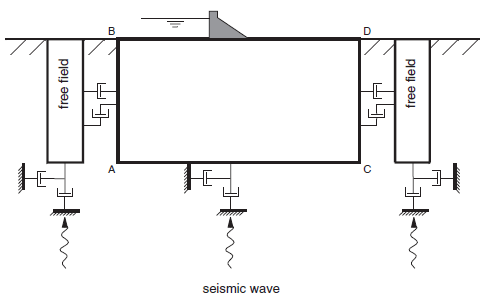
图 3：地表结构地震分析与自由场网格的模型。
要在 FLAC3D 中施加自由场边界，模型的方向必须满足：底面水平且其法向沿 \(z\) 轴方向，侧面竖直且其法向沿 \(x\) 轴或 \(y\) 轴方向。若入射地震波的传播方向不竖直，则可旋转坐标轴，使 \(z\) 轴与传播方向一致。此时，重力将与 \(z\) 轴成一定角度作用，而水平自由面将相对于模型边界倾斜。
自由场模型由模型侧边界上的四个平面自由场网格以及角部的四个柱状自由场网格组成（见 图 4（Figure 4））。平面网格的生成与侧边界上的主网格单元相匹配，从而使自由场与主网格的网格点之间一一对应。四个角部自由场柱为平面自由场网格充当自由场边界。平面自由场网格是二维计算，假定在垂直于平面的方向上无限延伸。柱状自由场网格是一维计算，假定在两个水平方向上均无限延伸。平面网格和柱状网格均由标准 FLAC3D 网格单元组成，其网格点以能够实现无限延伸假定的方式受到约束。

图 4：FLAC3D 模型中的侧边与角部自由场边界。
在施加自由场边界之前，模型应处于静力平衡状态。调用 单元动力自由场（zone dynamic free-field） 命令时，动力分析之前的静力平衡条件会自动传递到自由场。自由场条件施加到侧向边界网格点上。与自由场相邻的模型网格单元中的所有网格单元数据（包括模型类型和当前状态变量）都会复制到自由场区域。自由场应力赋值为相邻网格单元的平均应力。模型底部的动力边界条件应在施加自由场之前指定。施加自由场时，这些底部条件会自动传递到自由场。请注意，自由场是连续的；若主网格包含延伸至模型边界的接触面，则该接触面将不会延伸到自由场中。
给出 单元动力自由场（zone dynamic free-field） 命令后，每当绘制主网格时，自由场网格都会自动绘制。
自由场中可存在任意模型或非线性行为，也可存在流体耦合和自由场内的流动。
下面是一个使用自由场边界的简单示例的链接，该示例用于 图 4（Figure 4） 所示的模型。
动力边界条件的反卷积与选择
为抗震分析编制的设计地震动通常以露头运动的形式给出，且往往是岩石露头运动。[1] 然而对于 FLAC3D 分析，地震输入必须施加在模型底部而非地表，如 图 5（Figure 5） 所示。于是问题就出现了：“为使设计运动得到正确模拟，应在 FLAC3D 模型底部施加怎样的输入运动？”
深度处合适的输入运动可通过“反卷积”分析计算，所用工具为等效线性程序 SHAKE 或 DEEPSOIL 等一维波传播程序。这一看似简单的分析常常引起相当大的困惑，导致 FLAC3D 模型的地震动输入不当。下文介绍使用 SHAKE 将设计地震动调整为适用于 FLAC3D 输入的方法。地震动输入到 FLAC3D 通常采用以下方式之一：
- 刚性基底，即在 FLAC3D 网格底部指定加速度-时间历史。
- 柔性基底，即在 FLAC3D 网格底部采用安静（吸收）边界。
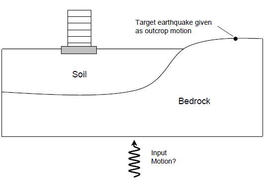
图 5：FLAC3D 的地震输入。
对于刚性基底，为沿网格底部的网格点指定加速度（或速度、位移）的时间历史。虽然使用简单，但刚性基底的一个潜在缺点是模型底部的运动被完全规定。因此，底部的作用就如同固定位移边界，会将向下传播的波反射回模型。所以，除非在基底处意在模拟很大的动力阻抗反差（例如高速基岩之上的低速沉积层），否则刚性基底不是适用于一般情况的合适边界。
对于柔性基底模拟，沿 FLAC3D 网格底部指定安静边界。参见安静边界（quiet boundaries）一节。请注意，若在安静基底上的某网格点记录加速度时程，该记录未必与输入历史一致。输入应力-时间历史规定了进入 FLAC3D 模型的向上传播波运动，但基底处的实际运动将是向上运动与从 FLAC3D 模型反射回来的向下运动的叠加。
SHAKE（Schnabel 等 1972）是广泛用于场地反应分析的一维波传播程序。SHAKE 计算剪切波在水平黏弹性层剖面中的竖向传播。在每一层内，波动方程的解可表示为上行波列与下行波列之和。SHAKE 的解以各层内这些上行和下行运动为变量来表述，如 图 6（Figure 6） 所示。
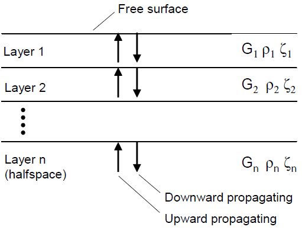
图 6：由 SHAKE 分析的层状体系（层性质为剪切模量 \(G\)、密度 \(\rho\) 和阻尼比 \(\zeta\)）。
一层中的波与相邻层中的波之间的关系，可通过强制层间界面处应力和位移连续来求解。这些关于两种弹性材料界面处反射波和透射波的著名关系式（Kolsky 1963）可用递推公式表示。这样，一层中的上行和下行运动便可由相邻层中的上行和下行运动计算得出。
为满足自由面处剪应力为零的条件，顶层中的上行和下行运动必须相等。从顶层开始反复使用递推公式，即可确定体系任意两层运动之间的传递函数。因此，若给定了体系中某一层的运动，便可计算任意其他层的运动。
SHAKE 的输入和输出并非以上行波列和下行波列表示，而是以 a) 两层之间界面处的运动（称为“层内”运动）或 b) 自由面处的运动（称为“露头”运动）表示。层内运动是上行波列与下行波列的叠加。露头运动是在该位置自由面处会发生的运动。因此，露头运动恰好是上行波列运动的两倍。如有需要，取露头运动的一半即可计算上行运动。此后，在任意点处，可由层内运动减去上行运动来计算下行运动。
SHAKE 的解在频域中给出，并借助傅里叶变换在时域之间相互转换。下文讨论的反卷积分析说明了 SHAKE 在线性弹性情形下的应用。参见层状线弹性土沉积层中 FLAC3D 与 SHAKE 的对比（Comparison of FLAC3D to SHAKE for a Layered, Linear-Elastic Soil Deposit）。SHAKE 还可以通过等效线性方法近似处理非线性土体行为。分析迭代进行，以获得与各层计算所得有效应变相协调的剪切模量和阻尼值。参见层状非线性弹性土中 FLAC3D 与 SHAKE 的对比（Comparison of FLAC3D to SHAKE for a Layered, Nonlinear-Elastic Soil）。
DEEPSOIL（Hashssh 等 2017）是一款一维场地反应分析程序，可执行：a) 含或不含孔隙水压力产生的一维非线性时域分析；b) 包含卷积和反卷积的一维等效线性频域分析；以及 c) 一维线性时域和频域分析。
刚性基底的反卷积——刚性基底的反卷积过程在 图 7（Figure 7） 中以二维 FLAC 模拟为例说明。同样的过程也适用于 FLAC3D。目标是确定施加到 FLAC 的合适基底输入运动，使目标设计运动能在 FLAC 模型顶面重现。所模拟的剖面由三个厚 20 m 的弹性层组成，其剪切波速度和密度如图所示。SHAKE 模型包含这三个弹性层以及与底层性质相同的弹性半空间。FLAC 模型由一列线弹性单元组成。目标地震作为露头运动输入到 SHAKE 柱的顶部。然后提取半空间顶部的运动作为层内运动，并将其作为加速度-时间历史施加到 FLAC 模型底部。Mejia 和 Dawson（2006）表明，FLAC 模型表面由此得到的加速度与目标运动几乎完全相同。SHAKE 的层内运动适用于刚性基底输入，因为如上所述，层内运动就是该位置处的实际运动，即上行波与下行波的叠加。
柔性基底的反卷积——柔性基底的反卷积过程在 图 8（Figure 8） 中以 FLAC 模拟为例说明。同样，该过程也适用于 FLAC3D。SHAKE 和 FLAC 模型与刚性基底算例中的模型相同，只是对 FLAC 网格底部施加了安静边界。为通过安静基底施加，需从半空间顶部的 SHAKE 中提取上行波运动（即露头运动的 1/2）。对该加速度-时间历史进行积分以获得速度，然后利用方程(4)将其转换为应力时程。同样，Mejia 和 Dawson（2006）表明，FLAC 模型表面由此得到的加速度与目标运动几乎完全相同。作为对计算所得加速度的额外检验，他们还表明柔性基底和刚性基底两种情形下的反应谱均与目标运动的反应谱高度吻合。
对于 反卷积分析，Idriss（2019 年 ASCE Terzaghi 讲座）发现，一种有用的做法是：先以较低的截止频率（例如约 5 Hz，取决于振动水平）完成分析以获得应变相容性质，然后将所得的应变相容模量和阻尼值用于一次迭代以及所需的截止频率（通常为 20 至 30 Hz）。

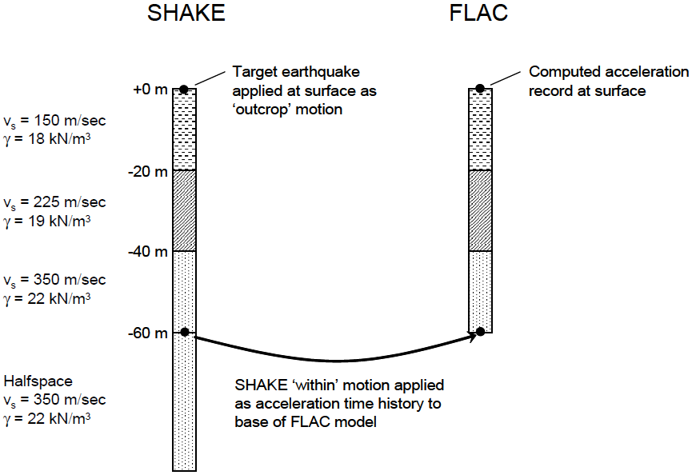
图 7：刚性基底的反卷积过程（据 Mejia 和 Dawson 2006）。

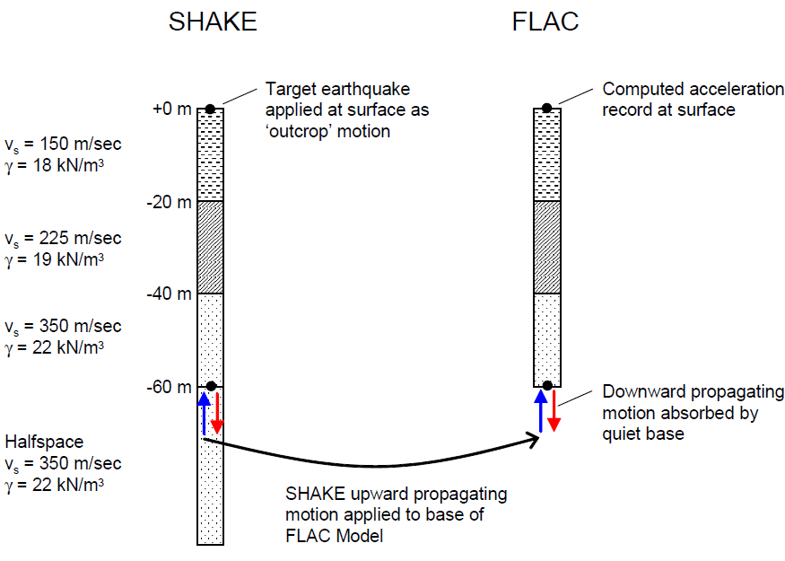
图 8：柔性基底的反卷积过程（据 Mejia 和 Dawson 2006）。
尽管上述示例有助于说明反卷积的基本思想，但它并非实践中遇到的典型情况。图 9（Figure 9） 所示的情形更为常见：一层或多层土体（预期表现为非线性）覆盖在基岩（假定表现为线性）之上。此情形下的 FLAC 或 FLAC3D 模型通常包含土体各层以及弹性基岩基底。为计算正确的 FLAC3D 柔性基底输入，需按图中所示构建 SHAKE 模型。SHAKE 模型包含一层与 FLAC3D 网格弹性基底厚度相同的基岩层，以及下伏的具有基岩性质的弹性半空间。目标运动作为基岩顶部（A 点）的露头运动输入到 SHAKE 模型。将该运动指定为露头运动，意味着 A 点正下方层中的上行波运动将设为等于目标运动的 1/2。FLAC3D 输入所需的上行运动在 B 点提取，为露头运动的 1/2。
对于柔性基底情形，实际上无需在 SHAKE 模型中包含土体各层，因为这些层不会影响 A 点与 B 点之间的上行波列。事实上，对于这种简单情形，并不真正需要进行正式的反卷积分析，因为 B 点的上行运动将与 A 点几乎相同。除时间偏移外，唯一的差异来自两点之间的材料阻尼，而对于基岩而言该差异通常很小。因此，对于这种非常常见的情形，FLAC3D 的正确输入运动就是目标运动的 1/2。（请注意，必须使用方程(4)将上行波运动转换为应力-时间历史，其中包含因子 2，以计入被黏性阻尼器吸收的应力。）
对于刚性基底分析，需要 B 点处的层内运动。由于该层内运动包含从地表反射回来的下行波，因此必须在 SHAKE 模型中包含非线性土层。然而，土体非线性在 FLAC3D 和 SHAKE 中的模拟方式差别很大。因此，难以计算刚性基底分析所需的合适 FLAC3D 输入运动。
实践中遇到的另一种典型情况示于 图 10（Figure 10）。此处土体剖面很深，模型并非将 FLAC3D 网格一直延伸到基岩，而是将底部终止于土体剖面之内。请注意，网格必须延伸至土体反应基本呈线性的深度以下。同样，设计运动作为露头运动输入到基岩顶部（A 点），而 FLAC3D 输入所需的上行运动在 B 点提取。与前一示例相同，对于柔性基底分析，无需在 SHAKE 模型中包含 B 点以上的土层。这些层对 A 点与 B 点之间的上行运动没有影响。与前一情形不同的是，A 点和 B 点的上行运动可能差别很大，这取决于基岩与线性土层之间的阻抗反差。因此，不宜跳过反卷积分析而直接使用目标运动。
刚性基底仅适用于模型底部阻抗反差很大的情形。然而，使用 SHAKE 计算 FLAC3D 模型刚性基底所需的输入运动时，仅对表现出较低非线性水平的模型，才能使目标地表运动与 FLAC3D 计算得到的地表运动良好吻合。输入运动已包含基底以上所有层的影响，因为它包含下行波。

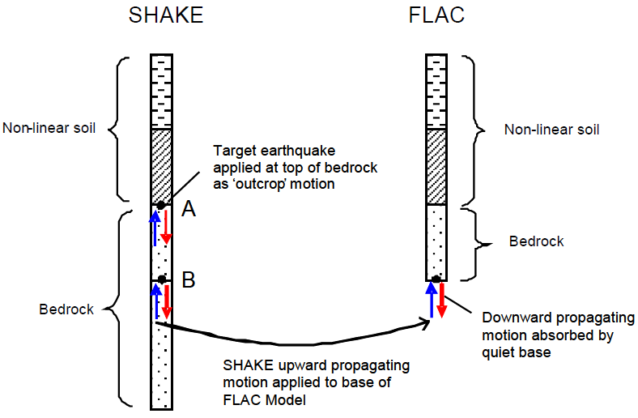
图 9：典型情形下柔性基底的反卷积过程（据 Mejia 和 Dawson 2006）。

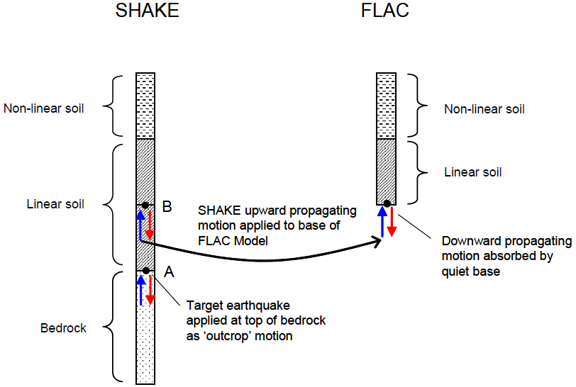
图 10：另一典型情形下柔性基底的反卷积过程（据 Mejia 和 Dawson 2006）。
若使用刚性基底的 FLAC3D 模型来模拟更符合实际的体系（例如表现出强烈非线性的场地，或地表结构、嵌埋结构的影响），则必须采用不同的方法。在第一种情况下，SHAKE 在估算基底运动时未考虑真实的非线性反应。在第二种情况下，来自结构的次生波会从刚性基底反射，造成人为的共振效应。
柔性基底几乎总是更可取的选项，因为下行波会被吸收。此时选择安静基底条件，仅使用 SHAKE 中的上行波来计算输入应力时程。由于在安静 FLAC3D 基底处仅使用上行波，因此无需对网格内部非线性或结构产生的次生波作任何假定，因为入射波不受这些因素影响；而出射波则被柔性基底吸收。
尽管刚性基底反射的存在在复杂的非线性 FLAC3D 分析中并不总是显而易见，但它们可能对分析结果产生重大影响，尤其是在采用循环退化或液化土模型时。Mejia 和 Dawson（2006）给出了二维 FLAC 模拟的示例，说明在具有刚性基底的模型中计算得到了非物理的波反射。其中一个示例（见 图 11（Figure 11））展示了刚性边界带来的困难。刚性基底导致的非物理振荡通过与 图 12（Figure 12） 中柔性基底结果的对比予以展示。两种情形（刚性和柔性）的输入均由同一地表运动反卷积得到。

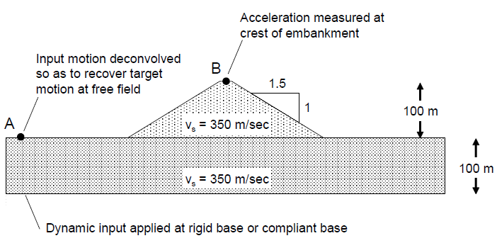
图 11：采用刚性基底和柔性基底分析的堤坝（据 Mejia 和 Dawson 2006）。

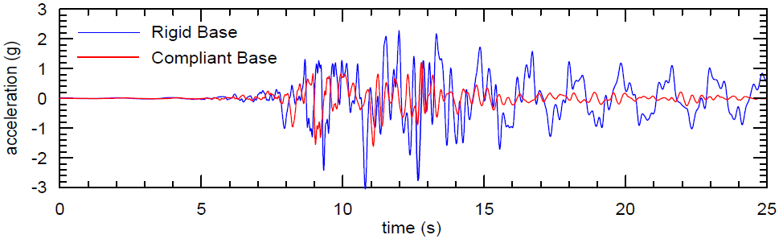
图 12：堤坝顶部的计算加速度（据 Mejia 和 Dawson 2006）。
动水压力
水库中的水与混凝土坝之间的动力相互作用会对坝在强震期间的表现产生显著影响。Westergaard（1933）为描述这种相互作用的各类方法建立了数学基础，该方法在工程实践中被普遍采用。尽管计算机的出现使流体-结构系统耦合微分方程的数值求解成为可能，但 Westergaard 提出的公式仍广泛用于较小坝体的稳定分析以及大坝设计中的初步计算。

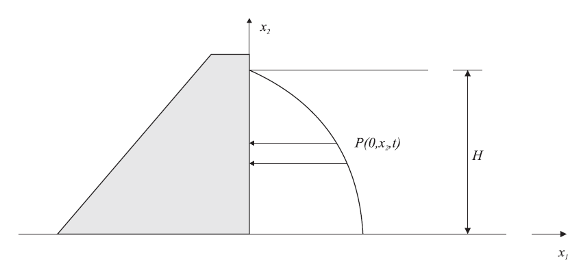
图 13：作用在具有竖直上游面的刚性坝上的动水压力。
作用在刚性混凝土坝上、水深为 \(H\) 时的动水压力如 图 13（Figure 13） 所示。该压力可由流体的运动方程导出。雷诺数很小的流体的运动方程可写为
其中 \(c\) 是水中的声速，\(\Phi\) 是速度势。水压力可写成速度势的函数：
其中 \(\rho_w\) 是水的密度。
为简化荷载条件，另作如下假定：
- 假定水不可压缩，这使方程(10)简化为拉普拉斯方程：\(\frac{\delta^2 \Phi}{\delta x_1^2} + \frac{\delta^2 \Phi}{\delta x_2^2} = 0\)。
- 假定水库自由面处于静止状态。因此，在 \(x_2 = H\) 处 \(\frac{\delta \Phi}{\delta t} = 0\)。
- 假定水库无限长。因此 \(x_1 \rightarrow \infty, \Phi \rightarrow 0\)。
- 假定动水运动仅为水平方向：在 \(x_2 = 0\) 处 \(\frac{\delta \Phi}{x_2} = 0\)。
- 坝的上游面竖直且坝为刚性：在 \(x_1 = 0\) 处 \(\frac{\delta \Phi}{x_1} = f(t)\)。
在上述假定下，方程(10)的解可对任意加速度 \(\ddot{x}_0 (t)\) 以无穷傅里叶级数的形式求得：
方程(11)可近似为
其中 \(C_m\) = 0.743，\(\ddot{x}\) 是坝面处的水平加速度。
方程(12)在 FLAC3D 中通过调整坝上游面上的网格点质量以计入动水压力来实现。由网格点相关的惯性力与水库水的动水压力共同产生的等效压力 \(\bar{p}\)（在该网格点所关联的面积上取平均）可写为
其中 \(A_g\) 是该网格点所关联的面积，\(\Delta x_2\) 是坝上游面上为该网格点施加水荷载的接触长度，\(\rho_ec\) 是该网格点的等效密度，由下式给出
其中
\(\rho_c\) 是混凝土密度，因此网格点质量为 \(m_g = A_g \rho_c\)。缩放后的网格点质量 \(m_sg = A_g \rho_ec\) 仅用于水平方向的运动计算；质量增加的效果不影响竖向力。
通过加入该项（由方程(13)确定）来调整网格点质量，以计入动水压力。该调整量存储在可使用 FISH 网格点函数 节点附加质量（gp.mass.add） 修改的位置。这些条件使用 zone face westergaard 命令施加。
下面提供一个简单示例，用以说明动水压力的效果，并将 Westergaard 近似解与使用 FLAC3D 网格单元显式模拟水所得的结果进行对比。
波传播
波传播的精度
在动力分析中，传播波的数值畸变会随建模条件而出现。输入波的频率成分和体系的波速特性都会影响波传播的数值精度。Kuhlemeyer 和 Lysmer（1973）指出，为准确表示波通过模型的传播，空间单元尺寸 \(\Delta l\) 必须小于与输入波最高频率成分对应的波长的约十分之一至八分之一。例如：
其中 \(\lambda\) 是与含有可观能量的最高频率成分对应的波长。
滤波
对于峰值速度高、上升时间短的动力输入，Kuhlemeyer 和 Lysmer 的要求可能需要非常精细的空间网格以及相应的小时步。其后果是，原本合理的分析可能因耗时和耗内存而难以承受。在此类情况下，可以通过认识到输入历史的大部分功率集中在较低频率成分中（例如使用“datafiles\FISH\Library”中的“fft.fis”）来调整输入。通过对历史滤波并去除高频成分，可以使用较粗的网格而不显著影响结果。
滤波过程可采用低通滤波程序（如快速傅里叶变换技术）完成。例如，图 14（Figure 14） 所示的未滤波速度记录表示一个含有极高频尖峰的典型波形。该输入的最高频率超过 50 Hz，但如傅里叶幅值随频率变化的功率谱密度图（图 15（Figure 15））所示，大部分功率（约 99%）由 15 Hz 及更低频率的成分构成。因此可以推断，用 15 Hz 低通滤波器对该速度时程滤波后，损失的功率不足 1%。按 15 Hz 滤波后的输入示于 图 16（Figure 16），傅里叶幅值绘于 图 17（Figure 17）。未滤波与滤波后输入的功率差小于 1%，而峰值速度降低了 38%，上升时间从 0.035 秒变为 0.09 秒。应以不同滤波水平的输入进行分析，以评价滤波器对模型结果的影响。
若使用违反方程(14)的输入历史进行模拟，输出中将出现非物理的虚假“振铃”（叠加振荡）。输入谱必须在施加到 FLAC3D 网格之前进行滤波。这一限制适用于所有对连续体进行离散化的数值模型；它并非 FLAC3D 所独有的特性。任何离散化介质能够传递的频率都有上限，为使结果有意义就必须遵守该上限。时域程序的使用者常向数值网格施加陡峭脉冲或阶跃波形；这是不可接受的，因为这些波形的频谱延伸到无穷。替代做法很简单：施加具有有限频谱的光滑脉冲。另一种做法是使用人工黏性，将陡峭波前分散到若干网格单元上（见人工黏性（Artificial Viscosity）），但该方法严格来说只适用于各向同性应变分量。
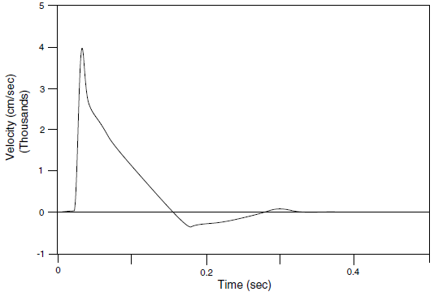
图 14：未滤波的速度时程。

图 15：未滤波的功率谱密度图。

图 16：15 Hz 滤波后的速度时程。

图 17：15 Hz 滤波的结果。
力学阻尼与材料响应
天然动力系统在系统内部对振动能量均具有一定程度的阻尼；否则，系统在受到驱动力作用时会无休止地振荡。阻尼部分源于完整材料内部摩擦以及沿接触面（若存在）滑移所造成的能量损失。
FLAC3D 采用动力算法求解两大类力学问题：准静态问题和动力问题。两类问题的求解都使用阻尼，但准静态问题需要更大的阻尼才能快速收敛到平衡。静力解的阻尼在力学阻尼（Mechanical Damping）中讨论。
对于动力分析，数值模拟中的阻尼应在量值和形式上再现天然系统在动力荷载作用下的能量损失。在土和岩石中，天然阻尼主要是滞回性的（即与频率无关——见 Gemant 和 Jackson 1937，以及 Wegel 和 Walther 1935）。由于至少存在两个问题（见 Cundall 1976，以及完全非线性方法的特性（Characteristics of Fully Nonlinear Method）中的讨论），在数值上再现这类阻尼比较困难。第一，当多个波形叠加时，许多简单滞回函数并不能同样地阻尼所有分量。第二，滞回函数会导致路径相关性，使结果难以解释。然而，若能找到一种本构模型足以合理地表示真实材料中发生的滞回，则无需附加阻尼。这一意见针对的是用 C++ 编写自有本构模型的用户；内建模型被认为不足以模拟动力滞回，因而不能完全省略附加阻尼。
由于若干原因，在数值模拟中使用材料“真实”的应力/应变响应并不现实。例如：1) 尚无描述完整材料响应的定律；2) 现有的、能够反映许多重要方面的定律含有许多材料参数，需要大量标定工作。
在时域程序中，常用瑞利阻尼（Rayleigh damping）在有限频率范围内提供近似与频率无关的阻尼。尽管瑞利阻尼（Rayleigh damping）包含两个黏性元件（其吸收的能量与频率有关），但通过调整可使频率相关效应在所关注的频率处相互抵消。
滞回阻尼（Hysteretic damping）是另一种阻尼选项。这种阻尼形式允许将随应变变化的模量和阻尼函数直接纳入 FLAC3D 模拟。这使得可以在不因本构模型选择而作任何折中的情况下，直接将等效线性方法的计算与完全非线性方法进行比较。
对于常规工程设计，必须采用循环能量耗散的近似表示。在 FLAC3D 中使用 Mohr-Coulomb 等简单塑性模型时，可在瑞利阻尼和滞回阻尼之间选择。此处对两种方法作一些总体比较，以便作出选择。总体而言，滞回阻尼是两者中更符合实际的一种，且不会导致时步减小。进一步讨论见岩土材料阻尼方案与非线性材料模型的集成（Integration of Damping Schemes and Nonlinear Material Models for Geo-materials）。
对于低循环应变水平和相当均匀的条件，只要两者设定的阻尼水平与所经历的循环应变水平相协调，瑞利阻尼和滞回阻尼会给出相似的结果。在以下两种情形下结果会有所不同：
1. 当体系不均匀时（例如各层性质差别很大），不同位置和不同时刻的循环应变水平可能不同。采用滞回阻尼时，这些不同的应变水平会在时间和空间上产生符合实际的不同阻尼水平，而恒定均匀的瑞利阻尼参数只能再现平均响应。可以采用迭代（应变相容）方案调整瑞利阻尼参数，以计入阻尼的空间变化，正如等效线性方法（equivalent-linear method）中所做的那样。也可以随时间调整瑞利阻尼参数，但可能会遇到一些实际困难。
2. 当接近屈服时，瑞利阻尼和滞回阻尼都不能计及大范围屈服的能量耗散。因此，不可逆应变发生在两种方案之外，耗散由屈服模型（例如 Mohr-Coulomb）表示。在这种条件下，瑞利阻尼的质量比例项可能抑制屈服，因为破坏模式中发生的刚体运动会被错误地抵抗。在这种情况下，滞回阻尼可能产生更大的永久应变，但通常认为这一情况比使用瑞利阻尼更符合实际。
我们注意到，滞回阻尼在循环应变水平极低时几乎不提供能量耗散，这可能不符合实际。为避免低水平振荡，建议在动力模拟中使用滞回阻尼时，加入少量的（例如 0.2%）刚度比例瑞利阻尼。
FLAC3D 中的另一种阻尼形式——FLAC3D 静力求解方案中所体现的局部阻尼（local damping）——也可用于动力计算，但需采用适合波传播的阻尼系数。动力问题中的局部阻尼可作为计入滞回阻尼的一种近似方法。然而，随着波形复杂程度的提高（即频率成分数目增加），它变得越来越不符合实际。局部阻尼无法正确捕捉多频率循环荷载的能量损失。
FLAC3D 中还提供第四种阻尼形式，即人工黏性（artificial viscosity）。这种阻尼可用于涉及陡峭动力波前的分析。
瑞利阻尼
瑞利阻尼最初用于结构和弹性连续体的分析，以阻尼体系的固有振型。因此，其方程以矩阵形式表达。
采用阻尼矩阵 \(C\)，其各分量分别与质量矩阵 \(M\) 和刚度矩阵 \(K\) 成比例：
其中 \(\alpha\) 是质量比例阻尼常数；\(\beta\) 是刚度比例阻尼常数。
质量比例项类似于将每个 FLAC3D 网格点与“地面”相连的阻尼器。刚度比例项类似于跨接在每个 FLAC3D 网格单元上的阻尼器（对应变率作出响应）。尽管两项都与频率有关，但如下文所述，通过适当选择参数，可在有限频率范围内获得近似与频率无关的响应。
对于多自由度体系，系统任意角频率 \(\omega_i\) 处的临界阻尼比 \(\xi_i\) 可由下式求得（Bathe 和 Wilson 1976）
或
临界阻尼比 \(\xi_i\) 也称为振型 \(i\)（角频率 \(\omega_i\)）的临界阻尼分数。
图 18（Figure 18） 给出了归一化临界阻尼比随角频率 \(\omega_i\) 的变化。图中给出三条曲线：仅质量分量、仅刚度分量以及两者之和。如图所示，在较低角频率范围内质量比例阻尼占主导，而在较高角频率时刚度比例阻尼占主导。表示两者之和的曲线在下列频率处达到最小值：
或
于是中心频率定义为
请注意，在频率 \(\omega_{\min}\)（或 \(f_{\min}\)）处（且仅在该频率处），质量阻尼和刚度阻尼各提供总阻尼力的一半。

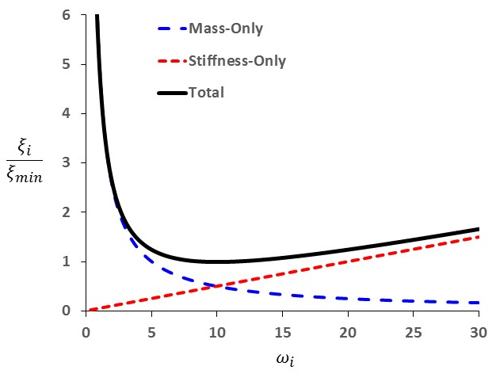
图 18：归一化临界阻尼比随角频率的变化。
在 FLAC3D 中，瑞利阻尼通过参数 \(f_{\min}\)（单位为赫兹，即每秒循环次数）和 \(\xi_{\min}\) 指定，二者均由 单元动力阻尼瑞利（zone dynamic damping rayleigh） 命令指定。
刚度比例阻尼会减小显式求解方案的临界时步（见 Belytschko 1983）。随着与最高固有频率对应的阻尼比增大，时步会减小（见动力时步（Dynamic Timestep））。这可能导致动力模拟的运行时间大幅增加。
在 FLAC3D 中，内部时步计算已计入刚度比例阻尼，但若大应变计算生效（设置大变形模式命令（model large-strain））且网格发生非常大的变形，仍可能出现不稳定性。此时必须（通过 模型动力时步固定（model dynamic timestep fix） 命令）手动减小时间步。
对于 图 18（Figure 18） 所示的情形，\(\omega_{\min} = 10\) 弧度/秒。显然，阻尼比在至少 3:1 的频率范围（例如从 5 到 15）内几乎保持恒定。由于地质介质中的阻尼通常与频率无关（如动力力学阻尼（Dynamic Mechanical Damping）中所述），\(\omega_{\min}\) 通常取为数值模拟中出现的频率范围的中心——即模型的固有频率或主要输入频率。由此可近似模拟滞回阻尼。
为计算网格点力，在一个时步内将代表瑞利阻尼刚度比例分量的黏性应力增量加到总应力增量上。因此，
其中 \(\sigma_v\) 是用于导出网格点力的组合应力张量的一个分量，\(\sigma_n\) 是本构律返回的对应分量，\(\sigma_o\) 是调用本构律之前该分量的值。记号 \(\bigl\{\) \(\bigr\}\) 表示所有分量构成的向量。
黏性应力不计入累积的总应力（\(\sigma_n\)）。
该公式不需要刚度矩阵。无论本构模型是线性还是非线性，瑞利阻尼都直接作用于其切线模量。
当 FLAC3D 网格单元内发生塑性破坏时，刚度比例阻尼会被关闭。但质量比例阻尼仍保持有效。若模型中发生大量破坏，质量比例项可能抑制屈服。在这种情况下，宜将瑞利阻尼排除在塑性流动强烈的区域之外（即使用 单元动力阻尼瑞利（zone dynamic damping rayleigh） 命令在选定区域设置瑞利阻尼，如阻尼的空间变化（Spatial Variation in Damping）所述）。
瑞利阻尼应用示例
为说明瑞利阻尼在 FLAC3D 中的工作方式，以下简单示例考察了四种阻尼情形的结果以作比较。
瑞利阻尼参数选取准则
阻尼比，\(\xi_{\min}\)
动力分析中通常试图做到的是，以正确的量级再现材料与频率无关的阻尼。对于地质材料，阻尼通常落在临界阻尼的 2% 至 5% 范围内；对于结构体系，2% 至 10% 具有代表性（Biggs 1964）。不同材料的建议阻尼值另见 Newmark 和 Hall（1982）。在使用塑性本构模型（例如 Mohr-Coulomb）的分析中，塑性流动期间可能发生相当多的能量耗散。因此，对于许多涉及大应变的动力分析，可能只需要很小的阻尼百分比（例如 0.5%）。此外，对于涉及塑性流动的应力/应变循环，耗散会随幅值增大而增加。\(\xi_{\min}\) 应调整为与正确的物理阻尼比一致。
可使用等效线性程序 SHAKE（Schnabel、Lysmer 和 Seed 1972）估算材料阻尼，以表示土体的非弹性循环行为。对层状土沉积层，利用各层的剪切波速和密度进行等效线性分析，然后确定与应变相容的阻尼比和剪切模量折减系数。对每一层估算平均阻尼比和剪切模量折减系数；所估算的阻尼比即为 FLAC3D 瑞利阻尼的输入值。
中心频率，\(f_{\min}\)
瑞利阻尼与频率有关，但具有一段跨越约 3:1 频率范围的“平坦”区，如 图 18（Figure 18） 所示。对于任一特定问题，对典型速度记录进行谱分析可能得到如 图 19（Figure 19） 所示的响应。[2]

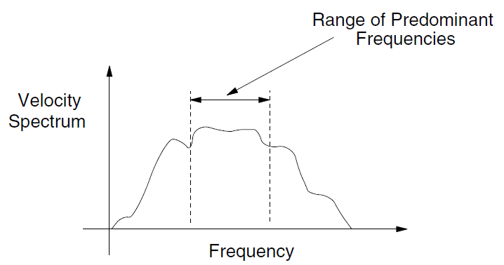
图 19：速度谱随频率的变化曲线。
若最高主要频率是最低主要频率的三倍，则存在一个 3:1 的跨度（范围），其中包含谱中大部分动力能量。动力分析中的思路是调整瑞利阻尼的 \(f_{\min}\)，使其 3:1 范围与问题中主要频率的范围一致。主要频率既不是输入频率，也不是系统的固有振型，而是两者的组合。其思路是尽量使问题中重要频率处的阻尼合适。
对于许多问题，重要频率与系统的固有振荡振型有关。此类问题的例子包括坝等地表结构的抗震分析，或地下开挖的动力分析。与系统固有振荡振型相关的基本频率 \(f\) 为
其中 \(C\) 是与该振荡振型相关的传播速度，\(\lambda\) 是与该振荡振型相关的最长波长。
对于连续弹性体系（例如一维弹性杆），\(p\) 波的传播速度 \(C_p\) 由方程(3)给出，\(s\) 波则由方程(4)给出。若杆的剪切运动产生最低固有振型，则上式采用 \(C_s\)；否则，若平行于杆轴的运动产生最低固有振型，则采用 \(C_p\)。
最长波长（或称特征长度、基本波长）取决于边界条件。考虑一个单位长度的实心杆，其边界条件如 图 20（Figure 20）a 所示。情形 (1)、(2) 和 (3) 的基本振型如 图 20（Figure 20）b 所示。若无法以这种方式估算某特定系统基本振型的波长，则可先进行零阻尼的试算（例如见力学阻尼（Mechanical Damping））。可由速度或位移的时程估算代表性的自振周期。弹性柱的自振周期（Natural Periods of an Elastic Column）给出了一个通过无阻尼模拟估算自振周期的简单示例。

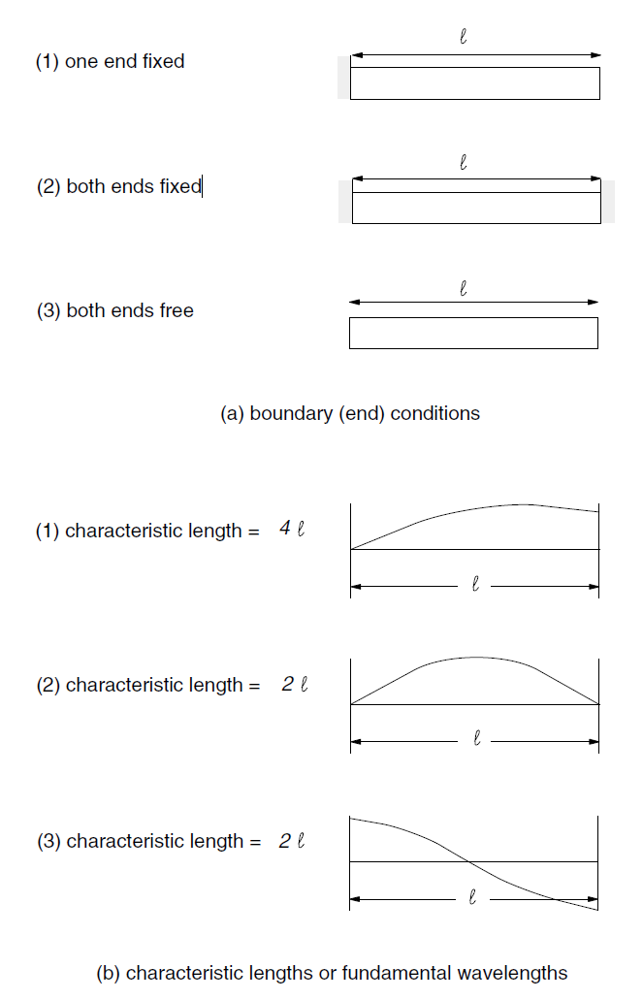
图 20：不同端部条件下杆件基本波长的对比。
滞回阻尼
等效线性方法（equivalent-linear method）多年来一直用于计算承受地震激励的场地中土和岩石内的波传播（及反应谱）。该方法并不直接捕捉任何非线性效应，因为它在求解过程中假定线性；随应变变化的模量和阻尼函数仅以平均意义计入，以近似某些非线性效应（阻尼和材料软化）。尽管 FLAC3D 等完全非线性程序原则上能够模拟正确的物理过程，但难以说服设计人员和审批机构接受完全非线性模拟。原因之一是 FLAC3D 可用的本构模型要么过于简单（例如弹塑性模型，无法再现土中出现的连续屈服），要么过于复杂（例如 Wang 模型 [Wang 等 2001]，需要许多参数和漫长的标定过程）。此外，还需要直接采用等效线性方法所用的同样的退化曲线（示例见 图 21（Figure 21） 和 22），以便工程师能从使用这些方法轻松过渡到使用完全非线性方法。
将此类循环数据纳入 FLAC3D 滞回阻尼模型的另一个动机是，这样便可消除对瑞利阻尼等附加阻尼的需求。瑞利阻尼在程序用户中不受欢迎，因为它常常导致时步大幅减小，进而增加求解时间。
此处介绍可选的滞回阻尼；它可单独使用，也可与瑞利阻尼或局部阻尼等其他阻尼方案配合使用。（它还可与部分内建本构模型一起使用，但具有非线性弹性模量的模型除外，例如修正 Cam-Clay。）
滞回阻尼公式并不是一个完整的本构模型：它应作为某个内建非线性模型的补充，而不应作为模拟屈服的主要手段。若所采用的模型同时体现塑性屈服和充分的滞回响应，则没有理由再添加更多阻尼；FLAC3D 中的滞回阻尼选项仅旨在为那些在未屈服时缺乏固有阻尼的模型提供阻尼。此外，当滞回阻尼生效时，除可能用于（以较低水平，例如 0.2%）消除高频噪声外，瑞利阻尼应不再需要。

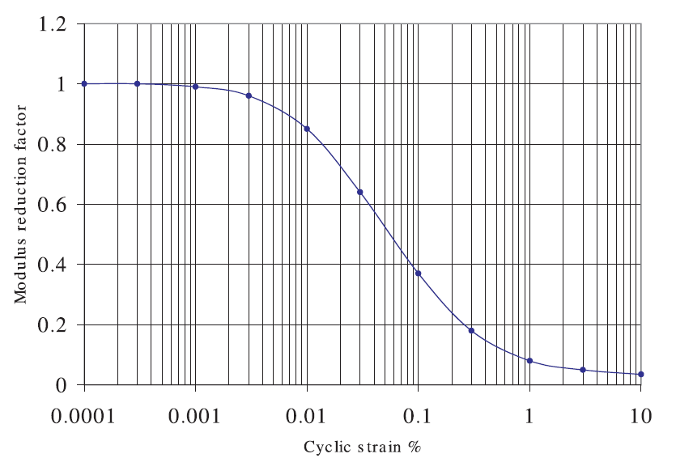
图 21：砂的模量折减曲线（Seed 与 Idriss 1970——“上限范围”）。 数据集来自 SHAKE-91 程序下载所附带的文件。 （SHAKE91 程序页面（https://nisee.berkeley.edu/elibrary/getpkg?id=SHAKE91））

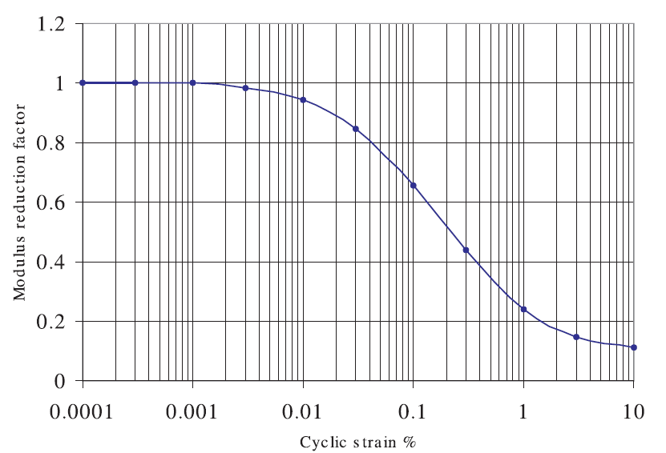
图 22：黏土的模量折减曲线（Sun 等 1988——“上限范围”）。 数据集来自 SHAKE-91 程序下载所附带的文件。 （SHAKE91 程序页面（https://nisee.berkeley.edu/elibrary/getpkg?id=SHAKE91））
滞回阻尼的公式、实现与标定
公式
如 图 21（Figures 21） 和 22 所示的模量退化曲线意味着应力/应变曲线是非线性的。若假定为理想土体，即应力仅取决于应变（而不取决于循环次数或时间），则可从退化曲线导出一个增量本构关系，由 \(\bar {\tau} / \gamma = M_s\) 描述，其中 \(\bar {\tau}\) 是归一化剪应力，\(\gamma\) 是剪应变，\(M_s\) 是归一化割线模量。
其中 \(M_t\) 为归一化切线模量。非线性模拟中的增量剪切模量随后由 \(G_o M_t\) 给出。它用来替代给定的剪切模量 \(G_o\)（即以 shear 名称赋值的属性）。
为处理二维和三维应变路径，采用与 Finn 模型所述类似的方法（见简单模型公式（Simple Model Formulations）），即将剪应变分解为应变空间中的各分量，并通过当前增量与先前平均路径的点积符号变化来检测应变反向。沿用 Finn 模型的公式（将 \(\epsilon\) 替换为 \(\gamma\)，其余记号相同）：
当 \(|d|\) 经过最大值时检测到反向，并按方程(37)和(38)更新前一次反向的应变值。请注意，此处没有 Finn 模型中所用的“潜伏”期（见简单模型公式（Simple Model Formulations））；检测反向之前不需要经过最小时步数。
在两次反向之间，剪模量乘以 \(M_t\)，其中方程(26)中取 \(\gamma = |d|\)。该乘数作用于所有内建本构模型所用的剪模量，但横观各向同性弹性、修正 Cam-clay 和蠕变材料模型除外。
实现
上述公式在 FLAC3D 中通过修改应变率计算来实现：在调用任何本构模型函数之前，先计算平均应变率张量（对所有子网格取平均）。在此阶段调用滞回逻辑，返回一个模量乘数，并将其传递给被调用的本构模型。随后模型使用乘数 \(M_t\) 调整正在处理的整个网格单元的切线剪模量视值。
除了通过对模量退化曲线（见下文）应用方程(26)得到的“骨干曲线”之外，还采用两条 Masing（1926）规则来规定反向点处的行为。这些规则实质上是：1) 在反向时开始一个新的（但反向的）函数，这意味着初始卸载模量为 \(G\)；2) 加载的第一个四分之一循环相对于所有其他循环按一半缩放。尽管 Pyke（2004）认为“两条 Masing 规则都不成立”，但为确保得到可重复的闭合滞回环，仍需作出某些简化假定。真实土体偏离这种理想行为，在本背景下并不被认为十分重要，因为该公式并非作为完整的本构模型，而只是提供滞回阻尼以替代瑞利阻尼。
另一条规则处理子循环：滞回逻辑包含后进先出（FILO）的压栈堆栈，用于在反向点记录所有状态信息（例如应力、应变、切线模量和前一反向点），并分别针对正向和负向应变方向。若应变水平回到并超过堆栈中记录的先前值（符号相应），则从堆栈中弹出该状态信息，使行为（并因此切线乘数）恢复到该次反向之前所采用的状态。
这些规则的运作方式在以下简单示例中说明：
地震工程中所用的退化曲线通常以数值表形式给出，其中循环应变按对数间隔分布。由于此处需要模量折减曲线的导数（即用于方程(26)），若采用数值导数，则过粗的间隔（例如 图 22（Figure 22） 所示曲线中的 11 个点）会导致不可接受的误差。因此，所实现的滞回模型仅使用连续函数表示模量折减曲线，以便计算解析导数。各种已实现的函数将在下一节中介绍。若退化曲线仅有表格形式，则必须先将其拟合为某一个内建函数形式，才能进行模拟。
滞回阻尼功能通过以下命令启用：
zone dynamic damping hysteretic name <v1 v2 v3 …> <range>
其中 name 是拟合函数的名称（可选 default、sigmoidal-3、sigmoidal-4 和 hardin——见下面的讨论），v1、v2、v3、…… 是函数参数的数值。可选的范围可以是任何适用于网格单元的合法范围短语。
可使用以下命令从任意范围的网格单元中移除滞回阻尼：
zone dynamic damping hysteretic off <range>
请注意，单元动力滞回阻尼命令（zone dynamic damping hysteretic） 命令仅适用于已选择 模型配置动力分析命令（model configure dynamic） 运行模式且 模型配置动力分析命令（model configure dynamic） 生效的情形。滞回阻尼的运行独立于所有其他形式的阻尼，这些阻尼也可设置为与滞回阻尼“并行”运行。
切线模量函数
有多种内建函数可用于表示剪切模量折减系数 \(G/G_{\rm max}\) 随循环应变（以百分比表示）的变化，具体取决于 单元动力滞回阻尼命令（zone dynamic damping hysteretic） 命令上指定的关键字。
默认模型——default
默认滞回模型的建立基于这样一个观察：模量随循环应变对数变化的 S 形曲线可用三次方程表示，且在低应变和高应变两端的斜率均为零。于是割线模量 \(M_s\) 为
其中
而 \(L\) 是对数应变，
参数 \(L_1\) 和 \(L_2\) 是对数应变的极值（即切线斜率变为零的取值）。因此，给定 \(L_1 = -3\) 和 \(L_2 = 1\) 意味着 S 形曲线将从 0.001%（10-3）的较低循环应变延伸到 10%（101）的较高循环应变。由于这些界限处斜率为零，使阻尼模型在超出该界限的应变下运行没有意义。（请注意，方程(39)仅假定在 \(0 \leq s \leq 1\) 时适用，否则切线模量将设为零。）切线模量由下式给出
利用链式法则，
可得
还有进一步限制 \(s > s_{\rm min}\)，使切线模量始终为正（无应变软化）。因此，
或
其中 \(A = 6 {\rm log}_{10}e / (L_2 - L_1)\)。最小的正根为
在应用该模型时，\(M_t = 0$ if $s < s_{\rm min}\)。
可使用曲线拟合绘图软件（例如 SigmaPlot，SigmaPlot 官网（http://www.systat.com/products/sigmaplot/））将默认模型函数拟合到退化曲线。例如，默认模型对 图 21（Figures 21） 和 22 曲线的数值最佳拟合分别列于 表 3（Tables 3） 和 4 中。
S 形模型——sigmoidal-3、sigmoidal-4
S 形曲线在定义范围内单调，并具有适当的渐近行为。因此这些函数很适合表示模量退化曲线。两类 S 形模型（分别为 3 参数和 4 参数）为
sigmoidal-3 model
sigmoidal-4 model
调用这些模型的命令行要求三个符号 \(a\)、\(b\) 和 \(x_o\) 分别由参数 v1、v2 和 v3 定义（用于 sig3 模型，方程(48)）。对于 sigmoidal-4 模型（方程(49)），四个符号 \(a\)、\(b\)、\(x_o\) 和 \(y_o\) 分别通过参数 v1、v2、v3 和 v4 输入。两种模型对 图 21（Figures 21） 和 22 曲线的数值拟合分别列于 表 3（Tables 3） 和 4 中。
Hardin/Drnevich 模型——hardin
Hardin 和 Drnevich（1972）提出了以下函数：
它具有一个有用的性质：当 \(\gamma = \gamma_{\rm ref}\) 时模量折减系数为 0.5，因此唯一的参数 \(\gamma_{\rm ref}\) 可由模量折减曲线与 \(G / G_{\rm max}\) = 0.5 线相交处的应变（通过目测）确定。取 \(\gamma_{\rm ref}\) = 0.06 可与 图 21（Figure 21） 的曲线吻合，取 0.234 则与 图 22（Figure 22） 的曲线吻合。
| 数据集 | 默认 | Sigmoidal-3 | Sigmoidal-4 | Hardin |
|---|---|---|---|---|
| 砂——上限范围 | \(L_1\) = -3.325 | \(a\) = 1.014 | \(a\) = 0.9762 | \(\gamma_{\rm ref}\) = 0.060 |
| （Seed 与 Idriss 1970） | \(L_2\) = 0.823 | \(b\) = -0.4792 | \(b\) = -0.4393 | |
| \(x_o\) = -1.249 | \(x_o\) = -1.285 | |||
| \(y_o\) = 0.03154 |
| 数据集 | 默认 | Sig3 | Sig4 | Hardin |
|---|---|---|---|---|
| 黏土——上限范围 | \(L_1\) = -3.156 | \(a\) = 1.017 | \(a\) = 0.922 | \(\gamma_{\rm ref}\) = 0.234 |
| （Sun 等 1988） | \(L_2\) = 1.904 | \(b\) = -0.5870 | \(b\) = -0.481 | |
| \(x_o\) = -0.633 | \(x_o\) = -0.745 | |||
| \(y_o\) = 0.0823 |
退化曲线的标定
切线模量函数的标定既要将该函数的计算结果与目标剪切模量折减曲线比较，也要与目标阻尼比曲线比较。下面提供一个简单示例以供说明和讨论：
在大多数试图与实验室阻尼曲线和数值阻尼曲线相匹配的工作中都注意到，滞回公式在低循环应变水平下提供的阻尼低于实验室观测值。这可能导致低水平噪声，尤其是在高频段。尽管此类噪声几乎不影响系统的基本响应，但出于外观上的考虑，可通过加入少量瑞利阻尼将其消除。研究发现，0.2% 的瑞利阻尼（取适当的中心频率）通常足以消除残余振荡而不影响求解时步。
简单应用
下面给出的示例对受数字化地震激励的 20 m 厚土层建模，以表明在涉及波传播、多重嵌套滞回环以及相当大循环应变的情形下能够出现合理的行为。
观察结果
已开发出一种在 FLAC3D 模拟中直接使用循环模量退化数据的方法。由此得到的模型能够再现等幅循环试验的结果，同时也能适应在应变空间和时间上任意变化的应变路径。因此，应当可以在不因本构模型选择而作任何折中的情况下，直接将等效线性方法的计算与完全非线性方法进行比较。所开发的方法并非要成为一个合理的土体模型；其目的是让等效线性方法的现有用户能够轻松升级到完全非线性方法。此外，新公式的滞回阻尼使用户能够避免使用瑞利阻尼及其不受欢迎的时步代价。层状非线性弹性土沉积层中 FLAC3D 与 SHAKE 的对比（Comparison of FLAC3D to SHAKE for a Layered, Nonlinear-Elastic Soil Deposit）中给出了一个层状模型的比较，其中一个假定采用 SHAKE 的非线性弹性材料，另一个采用带滞回阻尼的 FLAC3D。
使用滞回阻尼时的实际问题
在动力模拟中应用滞回阻尼时，应检查以下条件。
将滞回阻尼响应与实验室试验比较——将配合屈服本构模型使用的滞回阻尼模型所得的表观阻尼响应与实验室结果的阻尼曲线相比较，通常没有意义，因为实验室试验在发生剪切破坏时很可能失稳，从而无法提供有意义的结果。建议将 FLAC3D 的滞回响应与在不包含破坏的应变范围内获得的循环试验结果相匹配，并将塑性参数（例如黏聚力和摩擦角）与静力实验室强度试验相匹配。FLAC3D 能够在地震响应的典型模拟中把两种情形下的响应结合起来。
检查循环应变水平——滞回阻尼不仅为动力应变增加能量损失，对于较大的循环应变，还会使平均剪切模量减小。这可能导致意外的结果（例如，由于共振频率向输入波的主导频率靠近，响应幅值反而增大）。
在使用滞回阻尼运行动力模型之前，应先进行无阻尼的弹性模拟，以观察所出现的最大循环应变水平。若循环应变大到足以使给定模量折减曲线下的剪切模量过度减小，则滞回阻尼的使用就值得怀疑——它将超出其预期的适用范围。此时应检查模型性质和输入。若性质和输入合理，且大循环应变仅限于很小的区域，则可考虑将滞回阻尼排除在这些区域之外，在这些区域改用屈服模型（因为大应变意味着应发生屈服）。
检查模量折减系数——即使弹性条件下的循环应变很小，使用屈服模型也可能使应变增大。滞回阻尼公式并非意在替代屈服本构模型。它可以与屈服模型（例如 Mohr-Coulomb）配合使用，但若要获得有意义的结果，应避免在适用范围上发生冲突。
当某网格单元发生塑性流动时，其滞回阻尼会被“关闭”（包括滞回阻尼计算所涉及的相应应变累积）。请注意，瑞利阻尼的刚度比例分量在塑性流动期间也会被关闭。
即便如此，滞回阻尼逻辑所用的视模量仍可能降到很低的数值，从而造成不符合实际的响应。可通过监测模量折减系数来检查模量是否过低（或为零），该系数即滞回阻尼对小应变模量 \(G_o\) 所乘的系数。（例如，使用 FISH 网格单元变量 单元滞回阻尼参数（zone.hysteretic） 来获取所选网格单元的这一系数。）
为避免过低的折减系数造成不符合实际的过大变形，可设置截断选项。设置该截断折减系数的语法是使用关键字“reduction-minimum”后接用户定义的值，即：
zone dynamic damping hysteretic name <v1 v2 v3 v4> <reduction-minimum v5> <range>
在某些模拟中，在远离塑性流动区域的部位（例如模型底部附近）观察到了较大的模量折减。在这些情况下，采用单一的模量折减曲线似乎不符合实际。有证据表明（例如见 Darendeli 2001），退化曲线取决于平均应力水平：例如在深处（平均应力高），阻尼和模量折减较小。使滞回阻尼随深度变化，模拟应会更加符合实际。
检查初始剪应力状态——在实验室试验中，初始剪应力假定为零，因而滞回环通常是对称的。在实际应用中，初始剪应力不大可能为零（例如堤坝表面附近的土体单元中）。滞回阻尼的使用者必须就材料初始状态的最佳估计作出决定，因为 FLAC3D 中的滞回公式取决于剪应变的历史。可区分两种情形：
1. 若在一组平衡应力施加之后才激活滞回阻尼，则初始剪应变将为零，剪应力的循环往复将倾向于以起始点为中心对称。
2. 若在滞回阻尼生效的情况下通过对模型施加应变来建立初始应力，则随后剪应力的循环往复将倾向于不对称，因为应变的初始偏置会使应力/应变曲线在应力较高一侧的斜率更平缓。
这些情形在均质土层的一维地震激励（One-Dimensional Earthquake Excitation of Uniform Layer）示例中通过将初始模型修改为另外两种情形予以说明。
在滞回阻尼生效的情况下采用完整的静力求解，以获得应力和应变相互协调的起始状态，这一做法可用于更复杂的模型，例如坡面区域含有初始剪应力的堤坝。该方法的一个缺点是，静力求解在接近平衡状态时可能包含许多逐渐衰减的振荡循环。尽管这些循环通常相当小（且几乎不影响所需的应力状态），但它们会使许多状态被存储在内存堆栈中（见滞回阻尼的公式、实现与标定（Hysteretic Damping Formulation, Implementation and Calibration））。这些已存储的状态会在动力加载早期从堆栈中删除，但它们占用内存，并在计算时间上带来一些初始开销。在 FLAC3D 的未来版本中，或许可以加入相应逻辑，使用户能在静力初始化结束时清空堆栈，同时保留最新的应力相容应变状态，以供带滞回阻尼的动力模拟使用。
动力模拟中的局部阻尼
局部阻尼（见力学阻尼（Mechanical Damping））最初是作为使静力模拟达到平衡的手段而设计的。然而，它的一些特性使其对动力模拟颇具吸引力。其工作方式是在振荡循环的某些时刻向网格点或结构节点增加或减少质量；由于增加的量等于减少的量，质量总体守恒。速度改变符号时增加质量，速度经过最大值或最小值点时减少质量。因此，每个振荡循环中会移除两次动能增量（在速度极值处）。所移除的能量 \(\Delta W\) 与最大瞬时应变能 \(W\) 成正比，且其比值 \(\Delta W/W\) 与速率和频率无关。由于 \(\Delta W/W\) 可与临界阻尼分数 \(D\) 相关联（Kolsky 1963），可得表达式
其中 \(\alpha_{\rm L}\) 是局部阻尼系数。因此，使用局部阻尼比瑞利阻尼更简单，因为我们无需指定频率。示例重力作用下的块体（Block Under Gravity）将局部阻尼与其他选项进行了比较。
局部阻尼的一种改进形式——组合阻尼——也可用于动力模式，但其性能尚不清楚。组合阻尼的公式见力学阻尼（Mechanical Damping），调用它的命令为
zone.dynamic.damping.combined <v1>
地震模拟中不推荐使用局部阻尼，因为这类阻尼无法完全正确地表示多次循环加载的能量损失。
阻尼的空间变化
在 FLAC3D 中，瑞利阻尼和局部阻尼均通过 单元动力阻尼（zone dynamic damping） 命令指定。通过在命令中加入 range 短语来筛选参与该命令的网格点，可以规定阻尼参数（以及阻尼类型）的空间变化。例如，若已知不同材料具有不同的临界阻尼分数，则可为每种材料指定不同的 \(\xi_{\min}\) 值。这可通过修改柱中传播的波（wave propagating in a column）示例来演示。下面给出了该示例：
非均匀阻尼通过将 range 与 单元动力阻尼（zone dynamic damping） 命令结合使用来指定。可使用 gradient 关键字使阻尼常数在空间上变化。例如，可用以下命令修改瑞利阻尼参数：
zone dynamic damping rayleigh 0.05 gradient (0,0,-0.05) 25.0 gradient (0,0,-25)
在此情形下，阻尼系数和中心频率在空间上都有变化。请注意，所有阻尼参数都归属于gridpoints。特别地，作用于网格单元应变率的瑞利刚度比例项，是由相邻网格点处指定的值平均得到的。
动力模拟中的结构单元阻尼
通过给出 structure damping 命令，还可为结构单元单独指定瑞利阻尼、局部阻尼、组合阻尼和无阻尼。此后阻尼专门施加于模型中的所有结构单元。结构节点的默认阻尼为无阻尼。
结构阻尼与网格中的阻尼作用方式类似。然而，若结构节点刚性附着于某网格单元，则采用该网格单元的阻尼值而非结构节点的阻尼值。对于结构节点附着于空（null）网格单元的特殊情形，该节点的阻尼为零。下面给出了示例：
人工黏性
FLAC3D 中实现了 von Neumann 和 Landshoff 人工黏性项，用于在涉及上升时间很快的波形（例如冲击波）的动力分析中控制阻尼。这些黏性阻尼项是 Wilkins（1980）中一维方程 (1) 和 (3) 的推广，并对应于 von Neumann 和 Richtmyer 最初的黏性公式（见 Wilkins 1980）。
人工黏性方法最初是为流体动力学中冲击传播的数值计算而开发的。当剪应力分量与平均压力相比相当显著时，该方法可能不适用于弹性波或塑性波，因为该方法不会阻尼剪切波。二次 von Neumann 项 \(q_1\) 的作用是将冲击分散到若干网格间距上，并阻尼波前之后的振荡。线性 Landshoff 项 \(q_2\) 的作用是随着冲击的推进使冲击波前在更多网格单元上弥散。
在 FLAC3D 的实现中，按网格单元使用标量黏性项 \(q_1\) 和 \(q_2\) 的线性组合 \(q\)：
其中 \(a_n\) 和 \(a_l\) 是两个常数。黏性项的形式为
| 其中： | \(L\) | 是网格单元的特征尺寸（网格单元面积的平方根）； |
| \(\dot\epsilon\) | 是网格单元的体积应变率； | |
| \(\rho\) | 是网格单元的密度； | |
| \(a\) | 是材料的 \(p\) 波波速：\(a = {\sqrt{{(K + 4G/3) / \rho}}}\)，其中 \(K\) 和 \(G\) 是该网格单元的体积模量和剪切模量； | |
| \(c_0\) | 是设为 2 的常数；以及 | |
| \(c_1\) | 是设为 1 的常数。 |
并且，为兼顾压缩冲击和剪胀冲击，我们指定
在求解运动方程之前，将各向同性黏性应力的贡献加到节点的不平衡力中。
下面给出用于为 FLAC3D 模型激活人工阻尼的命令：
单元动力人工黏性阻尼命令（zone dynamic damping artificial-viscosity） \(a_n\) \(a_l\)
其中 \(a_n\) 和 \(a_l\) 是上文定义的两个常数，在大多数情况下应取值为 1。
请注意，阻尼项的存在会使稳定性条件略微更加严格，而这一点在实现中未被考虑。因此，在某些情况下可能必须减小时间步才能获得令人满意的数值稳定性。
下面给出的示例说明了人工黏性对通过一列网格单元传播的具有陡峭波前的膨胀波的影响。
岩土材料阻尼方案与非线性材料模型的集成
土和岩石中的能量耗散在很大程度上是滞回性的；每个剪应变加载/卸载循环的比损耗与执行该循环的速率无关，但取决于循环的幅值。理想情况下，这种行为应由适当的本构模型来再现，但恰当的非线性模型往往很复杂，包含许多材料参数。因此常改用 Mohr Coulomb 等较简单的模型，以再现地震加载期间可能发生的不可逆应变累积（例如崩塌或沿剪切面的滑移）。在此类模型中，必须加入附加阻尼，以计入响应弹性部分以及波通过场地传播期间的循环耗散。常用瑞利阻尼（Rayleigh damping），但它只能在有限频率范围内提供（近似）与速率无关的阻尼，并且会导致临界时步大幅减小，进而使运行时间很长。
以下讨论说明了将阻尼与简单材料模型相结合的几种方式。我们考虑使用滞回阻尼（hysteretic damping），并加上塑性流动产生的阻尼。滞回阻尼基于初次加载的割线模量折减曲线（骨干曲线）以及卸载/再加载时提供能量耗散的 Masing 规则假定。滞回阻尼仅在弹性范围内施加，而由本构模型提供的天然阻尼在塑性范围内起作用。下面给出三种简单情形。第一，给出标准弹塑性 Mohr-Coulomb 模型所提供的能量耗散。第二，利用滞回（Hardin/Drnevich 模型）阻尼将阻尼纳入线弹性模型。第三，将 Hardin/Drnevich 模型与 Mohr-Coulomb 模型相结合。通过评价各情形下剪切模量和阻尼比的变化，对三种情形的能量耗散进行比较。
Mohr-Coulomb 模型的天然阻尼
Mohr-Coulomb 等标准弹塑性模型能够产生剪切模量折减曲线和阻尼比曲线。考虑一个具有恒定剪切模量 \(G_{max}\) 和恒定屈服应力 \(\tau_m\) 的弹塑性模型，承受幅值为 \(|\gamma|\) 的循环剪应变。在屈服以下，割线剪切模量 \(G\) 就等于 \(G_{max}\)。对于涉及屈服的循环激励，割线模量为
模量折减曲线给出比值 \(G/G_{max}\) 与剪应变幅值 \(|\gamma|\) 之间的关系；只需将方程(56)除以 \(G_{max}\) 即可得到，并利用 \(\gamma_m\) = \(\tau_m\)/\(G_{max}\)，对于 \(|\gamma| > \gamma_m\)，可得
幅值为 \(\gamma_c\) > \(\gamma_m\) 的应力-应变循环（由初次加载加上一次卸载/再加载往复组成）示意于 图 23（Figure 23）：
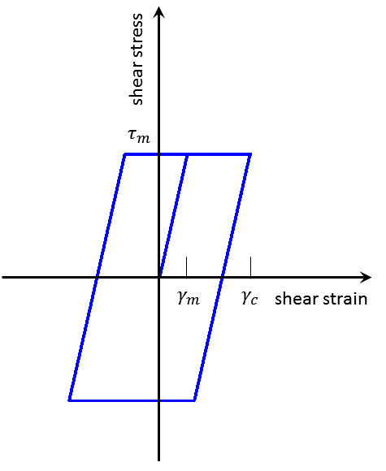
图 23：剪应力/剪应变循环——Mohr-Coulomb 模型。
循环期间的最大储存能量 \(W\)（假定 \(G\) 代表弹性模量）为
而耗散能（对应于滞回环所围面积）为
因此，
以 \(D\) 表示阻尼比，并注意到对于较小的 \(D\) 值（Kolsky 1963），
我们将由方程(57)得到的归一化模量（\(G/G_{max}\)）和由方程(59)得到的阻尼 \(D\) 相对于方程(62)中的归一化循环应变 \(\gamma/\gamma_m\) 绘图。可以看出，即使是一个简单模型（此处的“简单”是就动力问题而言），其模量和阻尼的演化也能在有限的循环应变范围内与试验结果相匹配。
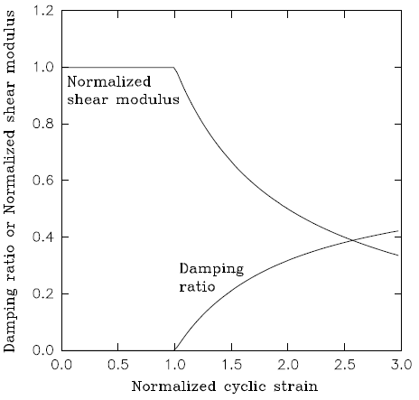
图 24：弹塑性 Mohr-Coulomb 模型的模量和阻尼比随循环应变的变化。
线弹性模型的滞回阻尼
对于采用滞回阻尼的公式、实现与标定（Hysteretic Damping Formulation, Implementation, and Calibration）中所述 Hardin/Drnevich 函数的滞回阻尼模型，骨干曲线由下式给出
其中 \(\gamma_{ref}\) 是 Hardin/Drnevich 函数的常数。\(\gamma_{ref}\) 是 \(\tau/G_{max}\) 的极限值：
初次加载沿该曲线进行。对于卸载/再加载，适用 Masing 规则。对于幅值为 \(\gamma_c\) 的等幅循环剪切加载情形，Masing 规则给出卸载时的关系为
再加载时为
其中
初次加载曲线以及一次卸载/再加载循环所描绘的滞回环示意于 图 25（Figure 25）。
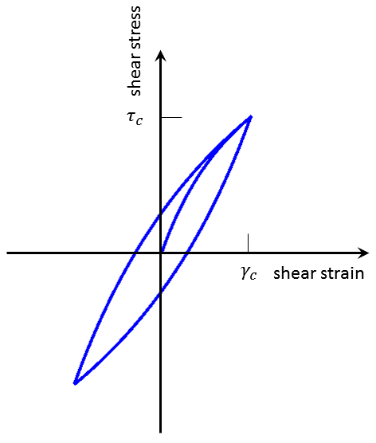
图 25：剪应力/剪应变循环——带 Hardin/Drnevich 滞回阻尼的弹性模型。
一个完整卸载-再加载循环所耗散的能量由下列积分给出
一个循环中的最大储存能量为
其中 \(\tau_c\) 由方程(67)给出。
阻尼比 \(D\) 由方程(68)和(69)与方程(70)联立得到：
此外，我们注意到应用洛必达法则可得
值得注意的是，对于 Hardin/Drnevich 滞回阻尼与弹性模型的组合，阻尼比不依赖于 \(G_{max}\)。此外，\(\gamma_{ref}\) 越小，\(D\) 越大。对于等体积、等幅的弹性循环剪切试验，使用滞回阻尼所产生的响应与所执行的循环次数无关。
Mohr-Coulomb 模型的滞回阻尼
在 FLAC3D 中将滞回阻尼与弹塑性模型一起使用时，模量折减技术施加于弹性范围，而天然阻尼施加于塑性范围。此处我们将 Hardin/Drnevich 滞回阻尼与 Mohr-Coulomb 模型相结合。Mohr-Coulomb 模型具有恒定的切线弹性剪切模量 \(G_{max}\) 和恒定的屈服应力 \(\tau_m\)。Hardin/Drnevich 模型用于在弹性范围内提供能量耗散（而不用于通过双曲线塑性模型模拟屈服）。因此，双曲线律的屈服水平必须高于 Mohr-Coulomb 的屈服应力。只要满足以下要求即可做到这一点：
其中
涉及 Mohr-Coulomb 屈服的初次加载曲线以及一次卸载/再加载循环所描绘的滞回环示意于 图 26（Figure 26）。
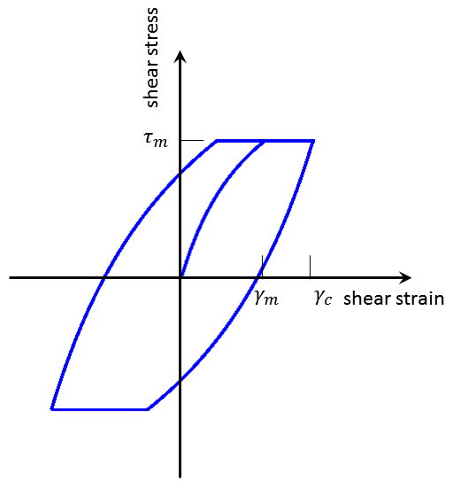
图 26：剪应力/剪应变循环——带 Hardin/Drnevich 滞回阻尼的 Mohr-Coulomb 模型。
弹性范围由 \(\gamma_c < \gamma_m\) 定义，其中剪应变 \(\gamma_m\) 由以下关系求得（见方程(63)）：
在弹性范围内（\(\gamma_c < \gamma_m\)），模量折减系数由方程(63)给出，即
在塑性范围内（\(\gamma_c \ge \gamma_m\)），关系为
此外，在塑性范围内，一个循环所耗散的能量是方程(50)中滞回环所围的面积。该能量可表示为两项贡献之和：
其中 \(\Delta W_H\) 由方程(69)给出
而 \(\Delta W_{MC}\) 表示为（见方程(59)）
一个循环中的最大储存能量为
而阻尼比为
通过在循环应变范围内计算 \(G/G_{max}\) 和 \(D\) 的表达式，对三种阻尼情形的能量耗散进行比较。列于“datafiles\Dynamic\Damping-Compare\Damping-Compare.dat”中的 FISH 函数在循环剪应变 \(\gamma_c\) 从 0.0001 至 4.0 的范围内执行该计算。\(\gamma_m\) 取 0.01，\(\gamma_{ref}\) 取 0.02。基于方程(57)、(63)、(76)和(77)得到的 \(G/G_{max}\) 随 log \(\gamma_c/\gamma_m\) 变化的结果绘于 图 27（Figures 27）。基于方程(62)、(71)和(83)得到的 \(D\) 随 log \(\gamma_c/\gamma_m\) 变化的结果绘于 图 28（Figure 28）。
结果表明，加入滞回阻尼会使剪切模量从初始值 \(G_{max}\) 降低，并使阻尼比增大（与仅有弹性的响应相比）。三种情形下阻尼比均随剪应变幅值单调增大，并趋近于渐近值 \(2 / \pi\)。该示例的项目文件可在“datafiles\Dynamic\Damping-Compare\Damping-Compare.f3prj”中找到。

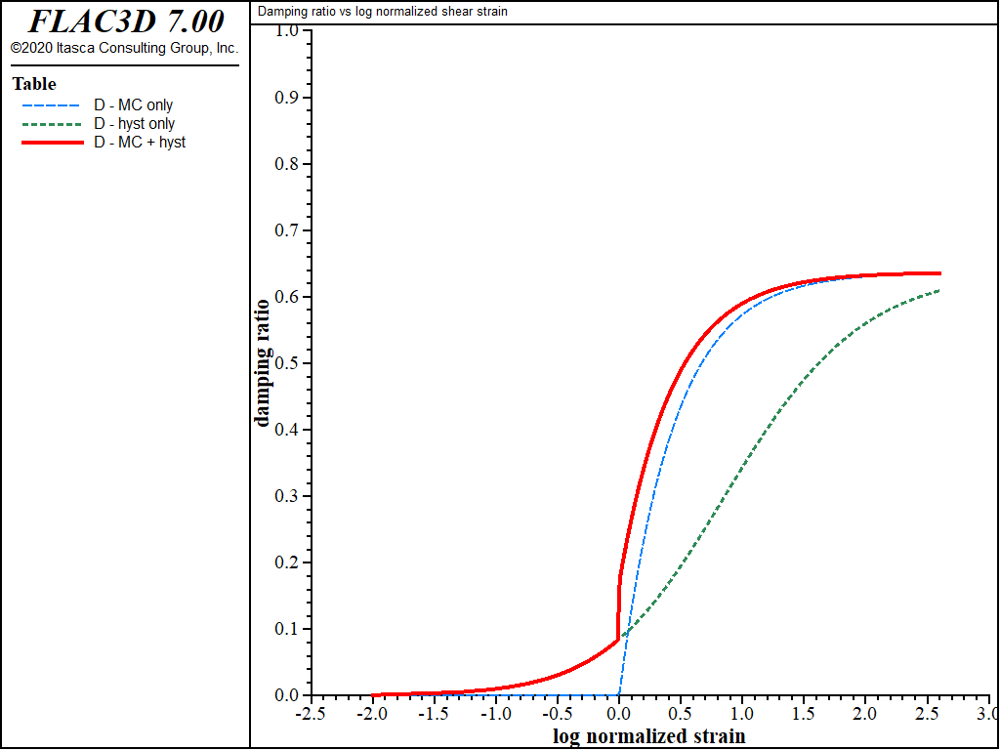
图 27：三种阻尼情形下归一化剪切模量随对数归一化剪应变的变化。

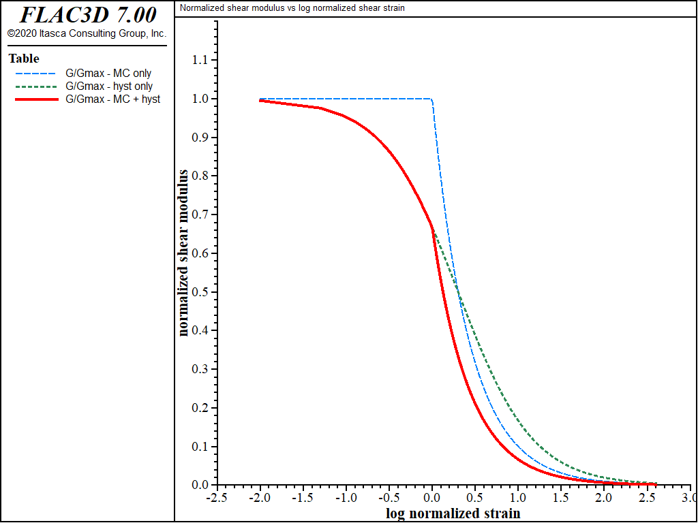
图 28：三种阻尼情形下阻尼比随对数归一化剪应变的变化。
尾注
| [1] | 本节经许可摘编自 Mejia 和 Dawson（2006）的文献。 |
| [2] | 基于快速傅里叶变换的谱分析以 FISH 函数的形式提供于 FISH 库中——见“FFT.FIS”。 |
⇐ Shear Wave On Stiff Wall In Soft Soil: Dynamic Multi-Stepping | Shear Wave Propagation in a Vertical Bar ⇒
| 这些内容对您有帮助吗？… 版权与免责声明 | FLAC3D © 2019, Itasca | 原文更新于 2020 年 10 月 8 日 |